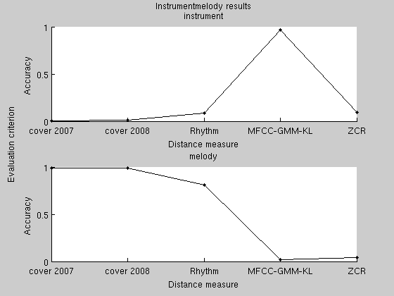
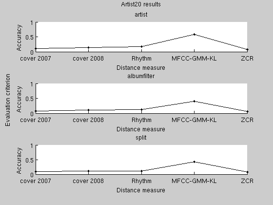
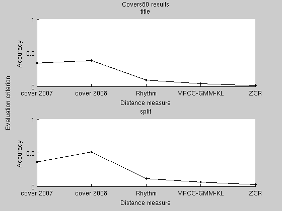
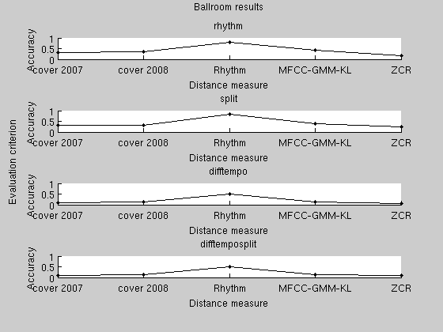

ISP_EVALUATEDEMO1 Demonstration of how to use the evaluation framework
In the following, we set up and run an evaluatoin of some music distance measures from the toolbox and a simple, custom one.
The first distance measure to evaluate is Jensen, Ellis, Christensen and Jensen's submission for the MIREX 2007 Audio Cover Song Identification. As the default parameters have been further optimized since then, we need to restore the old values.
distancemeasure={};
distancemeasure{end+1} = isp_tichroma;
distancemeasure{end}.name = 'cover 2007';
distancemeasure{end}.options.tMax = 60;
distancemeasure{end}.options.tMin = 1.5;
distancemeasure{end}.options.nBands = 25;
distancemeasure{end}.options.maxOffset = 2;
distancemeasure{end}.options.variation = 'logfreq';
Next, we evaluate the current version of the cover song identification system, our rhythmic style distance measure, and the classical MFCC-Gaussian-KL measure.
distancemeasure{end+1} = isp_tichroma;
distancemeasure{end}.name = 'cover 2008';
distancemeasure{end+1} = isp_tirhythm;
distancemeasure{end+1} = isp_mfccgmmkl;
Finally, to illustrate how to test a custom distance measure, we create a simple distance measure based on the zero crossing rate.
distancemeasure{end+1}.name = 'ZCR';
distancemeasure{end}.samplerate = 8000;
distancemeasure{end}.mono = true;
The 'computefeature' field is called using 'feval'. The wave signal is in the variable 'wav'. If an 'options' field was specified, it will be transfered to the variable 'options'. The result is returned in the variable 'feature'.
distancemeasure{end}.computefeature = 'feature = mean(abs(diff(sign(wav))));';
The 'computedistance' field works in the same way. The variables 'feature1' and 'feature2' contain two features, and the distance between them is returned in the variable 'featureDistance'. Usually, 'computefeature' and 'computedistance' will just contain function calls and not the entire feature and distance computation code as here.
distancemeasure{end}.computedistance = 'featureDistance = abs(feature1 - feature2);';
As we will call the isp_evaluate function a couple of times, we store the common arguments in a variable. In the common arguments, we specify the tests to conduct, where to store temporary files, and paths to data collections. The ISMIR genre data can be downloaded from http://ismir2004.ismir.net/genre_contest/index.htm, the ballroom data from http://mtg.upf.edu/ismir2004/contest/tempoContest/node5.html, the artist20 data from http://labrosa.ee.columbia.edu/projects/artistid/, and the covers80 data from http://labrosa.ee.columbia.edu/projects/coversongs/covers80/.
datapath = 'evaluatedata'; evaluateArgs = { 'experiment', {'instrumentmelody', 'artist20', 'covers80', 'ballroom'}, ... 'dataPath', datapath, ... 'ismirgenrepath', './ismirgenre', ... 'ismir2004ballroompath', './', ... 'artist20path', './artist20', ... 'covers80path', './covers80'};
First time we call isp_evaluate, it distributes feature extraction.
isp_evaluate(distancemeasure, evaluateArgs{:});
Options: 0. Execute without distributing anything. 1. Distribute feature calculation. 2. Merge features and distribute distances. 3. Merge features, compute distances and extract results. 4. Merge distances and extract results. 5. Show results. What do you want to do? 1 Testing distance measure cover 2007. Performing instrumentmelody test. Creating job file evaluatedata/distributedfeatures/pendingJobs/job000001.mat. Creating job file evaluatedata/distributedfeatures/pendingJobs/job000002.mat. Creating job file evaluatedata/distributedfeatures/pendingJobs/job000003.mat. ... Creating job file evaluatedata/distributedfeatures/pendingJobs/job000793.mat. Creating job file evaluatedata/distributedfeatures/pendingJobs/job000794.mat. Creating job file evaluatedata/distributedfeatures/pendingJobs/job000795.mat.
We next run the distributed jobs. Better have a lot of patience ... It is intended to be used with a network file system and a lot of computers.
isp_runjob(fullfile(datapath, 'distributedfeatures'))
No more pending jobs.
Next time we call isp_evaluate, we load the features and distribute distance matrix computations. Alternatively, if distance computations had been fast, we could have computed them immediately.
isp_evaluate(distancemeasure, evaluateArgs{:});
isp_runjob(fullfile(datapath, 'distributeddistances'))
Options: 0. Execute without distributing anything. 1. Distribute feature calculation. 2. Merge features and distribute distances. 3. Merge features, compute distances and extract results. 4. Merge distances and extract results. 5. Show results. What do you want to do? 2 Testing distance measure cover 2007. Performing instrumentmelody test. Loading results from file evaluatedata/distributedfeatures/results/results000001.mat. Loading results from file evaluatedata/distributedfeatures/results/results000002.mat. Loading results from file evaluatedata/distributedfeatures/results/results000003.mat. ... Loading results from file evaluatedata/distributedfeatures/results/results000794.mat. Loading results from file evaluatedata/distributedfeatures/results/results000795.mat. Creating job file evaluatedata/distributeddistances/pendingJobs/job000020.mat. No more pending jobs.
Next, we load the distance matrices and compute classification accuracies
isp_evaluate(distancemeasure, evaluateArgs{:});
Options: 0. Execute without distributing anything. 1. Distribute feature calculation. 2. Merge features and distribute distances. 3. Merge features, compute distances and extract results. 4. Merge distances and extract results. 5. Show results. What do you want to do? 4 Testing distance measure cover 2007. Performing instrumentmelody test. Loading results from file evaluatedata/distributeddistances/results/results000001.mat. Performing artist20 test. Loading results from file evaluatedata/distributeddistances/results/results000002.mat. ... Loading results from file evaluatedata/distributeddistances/results/results000019.mat. Performing ballroom test. Loading results from file evaluatedata/distributeddistances/results/results000020.mat.
In the final call to isp_evaluate, we ask it to plot the results. If this script did not have to run un-aided, we would have called isp_evaluate only once in the script, but would have called the script several times instead.
isp_evaluate(distancemeasure, evaluateArgs{:});
Options:
0. Execute without distributing anything.
1. Distribute feature calculation.
2. Merge features and distribute distances.
3. Merge features, compute distances and extract results.
4. Merge distances and extract results.
5. Show results.
What do you want to do? 5
ans =
[1x1 struct] [1x1 struct] [1x1 struct] [1x1 struct]
   
| Intelligent Sound Processing Toolbox | Contents |